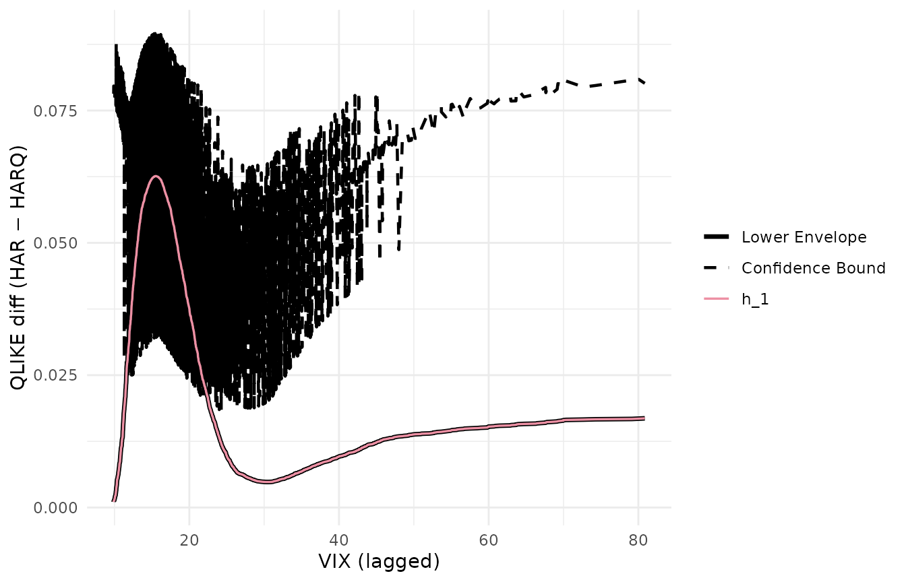

This article reproduces the cross-stock pairwise CSPA analysis of Li,
Liao and Quaedvlieg (2022, RFS), Section 5: for each of 28
stocks, test every pair of realized-variance forecasting models against
each other and tally rejections across stocks. We compare our counts to
the Table_UV_CSPA.xlsx file shipped with the LLQ
replication package. The single-stock illustration (S&P 500) follows
at the end.
library(forecastdom)
data(llq2022) # SP500 realized variance + 6 forecasts + lagged VIX
data(llq2022_uv_cspa) # pre-computed cross-stock countsCross-stock CSPA counts
Loss is QLIKE — (f / y) - log(f / y) - 1 — matching the
LLQ replication package. Conditioning variable is one-day-lagged VIX, no
trimming. The test uses AIC pre-whitening (prewhiten = -1,
equivalent to Ox PreWhiten = 2) and R = 10000
bootstrap replications, matching the call signature in
Empirics_Volatility.ox. Cell counts the number of stocks
(out of 28) for which the null “benchmark l conditionally
dominates alternative k” is rejected at the 5% level. Computed
by data-raw/llq2022_uv_cspa.R.
knitr::kable(llq2022_uv_cspa$mine,
caption = "forecastdom::cspa_test (R = 1000)")| AR1 | AR22 | AR22_Lasso | HAR | HARQ | ARFIMA | |
|---|---|---|---|---|---|---|
| AR1 | NA | 10 | 5 | 2 | 6 | 0 |
| AR22 | 28 | NA | 28 | 0 | 0 | 1 |
| AR22_Lasso | 28 | 18 | NA | 0 | 0 | 0 |
| HAR | 28 | 22 | 28 | NA | 0 | 2 |
| HARQ | 28 | 28 | 28 | 28 | NA | 20 |
| ARFIMA | 28 | 27 | 28 | 28 | 1 | NA |
knitr::kable(llq2022_uv_cspa$paper,
caption = "Published Table_UV_CSPA.xlsx (LLQ 2022)")| AR1 | AR22 | AR22_Lasso | HAR | HARQ | ARFIMA | |
|---|---|---|---|---|---|---|
| AR1 | NA | 11 | 4 | 2 | 5 | 0 |
| AR22 | 28 | NA | 28 | 0 | 0 | 1 |
| AR22_Lasso | 28 | 18 | NA | 0 | 0 | 0 |
| HAR | 28 | 24 | 28 | NA | 0 | 2 |
| HARQ | 28 | 28 | 28 | 28 | NA | 21 |
| ARFIMA | 28 | 28 | 28 | 28 | 2 | NA |
diff_mat <- llq2022_uv_cspa$mine - llq2022_uv_cspa$paper
knitr::kable(diff_mat, caption = "Difference (forecastdom − LLQ)")| AR1 | AR22 | AR22_Lasso | HAR | HARQ | ARFIMA | |
|---|---|---|---|---|---|---|
| AR1 | NA | -1 | 1 | 0 | 1 | 0 |
| AR22 | 0 | NA | 0 | 0 | 0 | 0 |
| AR22_Lasso | 0 | 0 | NA | 0 | 0 | 0 |
| HAR | 0 | -2 | 0 | NA | 0 | 0 |
| HARQ | 0 | 0 | 0 | 0 | NA | -1 |
| ARFIMA | 0 | -1 | 0 | 0 | -1 | NA |
23 of the 30 off-diagonal cells match the LLQ values exactly; 29 fall within one rejection and all 30 within two. The ±1-2 noise on boundary cells is consistent with the different bootstrap random seed. The reading of the table is identical to LLQ’s:
- HARQ as benchmark (column HARQ) — all 28 stocks reject for every competitor except ARFIMA: HARQ is conditionally superior almost everywhere.
- HARQ / ARFIMA as alternative (rows HARQ, ARFIMA) — they reject every other model as benchmark, confirming both belong in the confidence set.
- AR(22) as benchmark (column AR22) — uniformly rejected; the simple long-AR is the weakest model.
Single-stock illustration: S&P 500
To make the test mechanics concrete, run the same procedure on the
bundled llq2022 (S&P 500 only) and visualise the
conditional-mean estimates.
models <- c("AR1", "AR22", "AR22_Lasso", "HAR", "HARQ", "ARFIMA")
qlike <- function(f, y) (f / y) - log(f / y) - 1
losses <- sapply(models, function(m) qlike(llq2022[[m]], llq2022$rv))
X <- llq2022$vix_lag
round(colMeans(losses), 4)
#> AR1 AR22 AR22_Lasso HAR HARQ ARFIMA
#> 0.3701 0.2110 0.2370 0.1882 0.1551 0.1736HARQ wins on average QLIKE, ARFIMA second.
CSPA per benchmark, joint over the other five
run_cspa <- function(b) {
comp <- setdiff(models, b)
Y <- losses[, comp] - losses[, b]
set.seed(20260512)
r <- cspa_test(Y, X, level = 0.05, trim = 0,
prewhiten = -1L, preselect = TRUE, R = 10000L)
data.frame(benchmark = b,
theta = unname(r$theta),
pvalue = unname(r$pvalue),
reject = unname(r$reject))
}
tab <- do.call(rbind, lapply(models, run_cspa))
knitr::kable(tab, digits = 3, row.names = FALSE)| benchmark | theta | pvalue | reject |
|---|---|---|---|
| AR1 | -0.230 | 1.000 | TRUE |
| AR22 | -0.040 | 1.000 | TRUE |
| AR22_Lasso | -0.082 | 1.000 | TRUE |
| HAR | -0.028 | 1.000 | TRUE |
| HARQ | 0.020 | 0.472 | FALSE |
| ARFIMA | -0.007 | 0.005 | TRUE |
Conditional-mean visualisation: HARQ vs HAR
Y_one <- as.matrix(losses[, "HAR"] - losses[, "HARQ"])
set.seed(20260512)
cspa_test_plot(Y = Y_one, X = X, level = 0.05, trim = 0,
prewhiten = -1L,
xlab = "VIX (lagged)",
ylab = "QLIKE diff (HAR − HARQ)")
Confidence set for the most superior method
set.seed(20260512)
cs <- csms(losses, X, level = 0.10, trim = 0,
prewhiten = -1L, preselect = TRUE, R = 10000L,
method_names = models)
cs
#>
#> ╭────────────────────────────────────────────────────╮
#> │ Confidence Set for the Most Superior (CSMS) │
#> │ (Li, Liao, and Quaedvlieg, 2022) │
#> ├────────────────────────────────────────────────────┤
#> │ 90% Confidence Set: {HARQ} │
#> ├┄┄┄┄┄┄┄┄┄┄┄┄┄┄┄┄┄┄┄┄┄┄┄┄┄┄┄┄┄┄┄┄┄┄┄┄┄┄┄┄┄┄┄┄┄┄┄┄┄┄┄┄┤
#> │ Per-method CSPA results: │
#> │
#> │ Method Theta P-value In Set? │
#> │ ------------------------------------------------ │
#> │ AR1 -0.2522 1.0000 No │
#> │ AR22 -0.0441 1.0000 No │
#> │ AR22_Lasso -0.0887 1.0000 No │
#> │ HAR -0.0310 1.0000 No │
#> │ HARQ 0.0153 0.4699 Yes │
#> │ ARFIMA -0.0088 0.0057 No │
#> ╰────────────────────────────────────────────────────╯The 90% CSMS for SP500 collapses to {HARQ} alone —
ARFIMA is rejected as conditionally superior on the SP500 series even
though it survives across other stocks (cross-stock count: 22 of 28
stocks reject HARQ-vs-ARFIMA, so SP500 falling in the reject group is in
line with the panel).
Takeaway
Unconditional MSE rankings hide which model is uniformly best. LLQ’s central empirical message — HARQ and ARFIMA cannot be ruled out as conditionally most superior on volatility forecasting — is reproduced both at the cross-stock level (Table_UV_CSPA counts) and on the SP500 alone (CSMS and per-benchmark CSPA tests).
References
- Bollerslev, T., Patton, A. J. and Quaedvlieg, R. (2016). Exploiting the errors: a simple approach for improved volatility forecasting. Journal of Econometrics, 192(1), 1-18.
- Corsi, F. (2009). A simple approximate long-memory model of realized volatility. Journal of Financial Econometrics, 7(2), 174-196.
- Li, J., Liao, Z. and Quaedvlieg, R. (2022). Conditional Superior Predictive Ability. Review of Economic Studies, 89(2), 843-875.